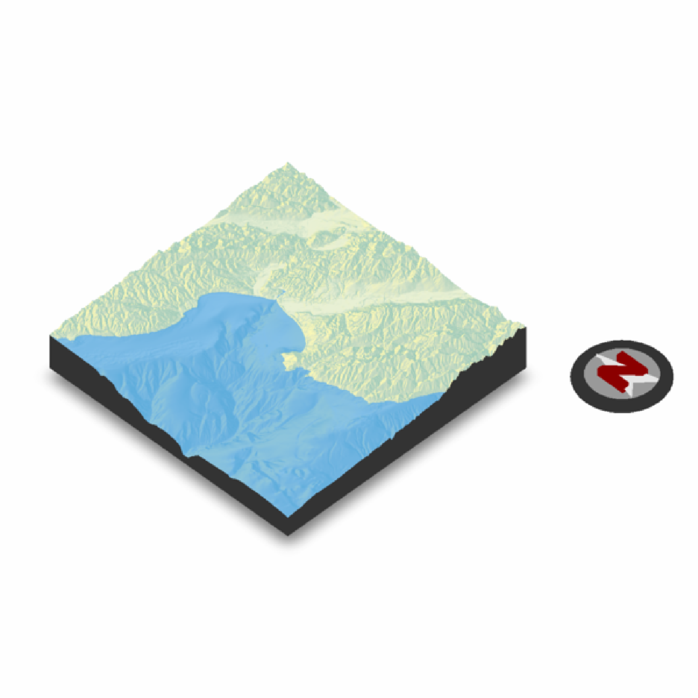
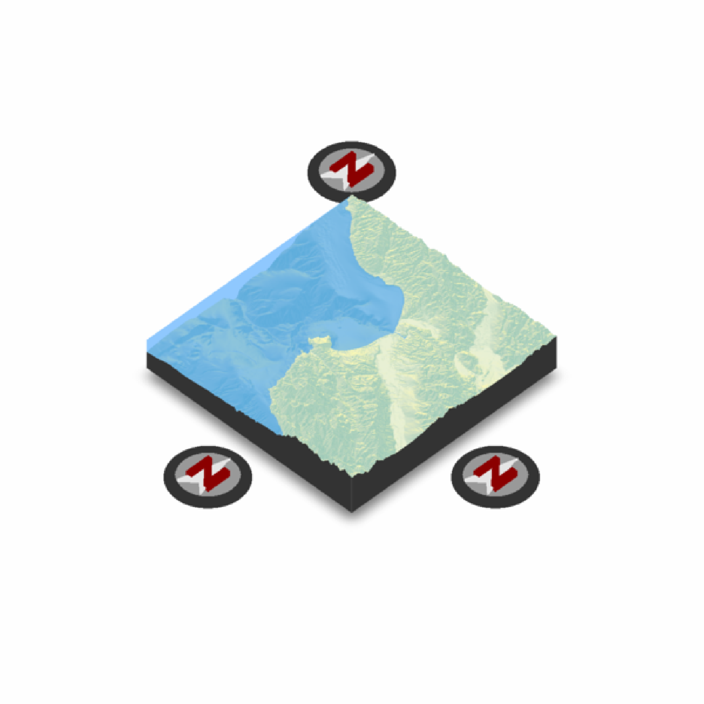
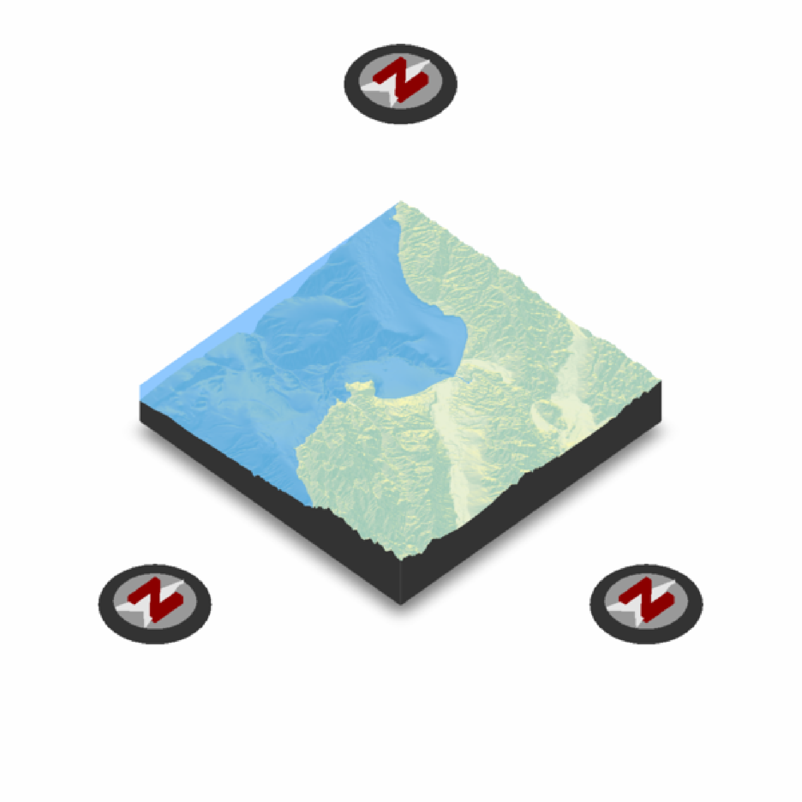
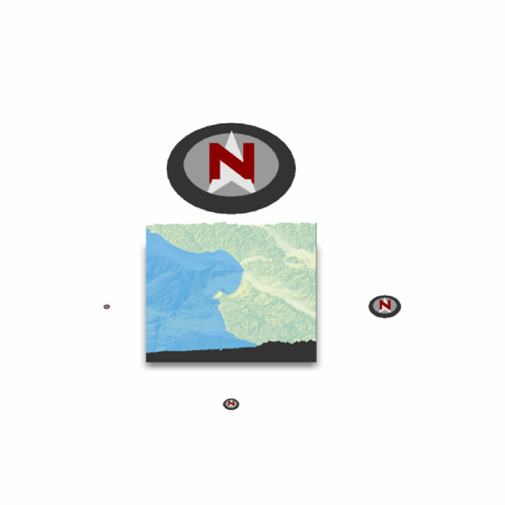
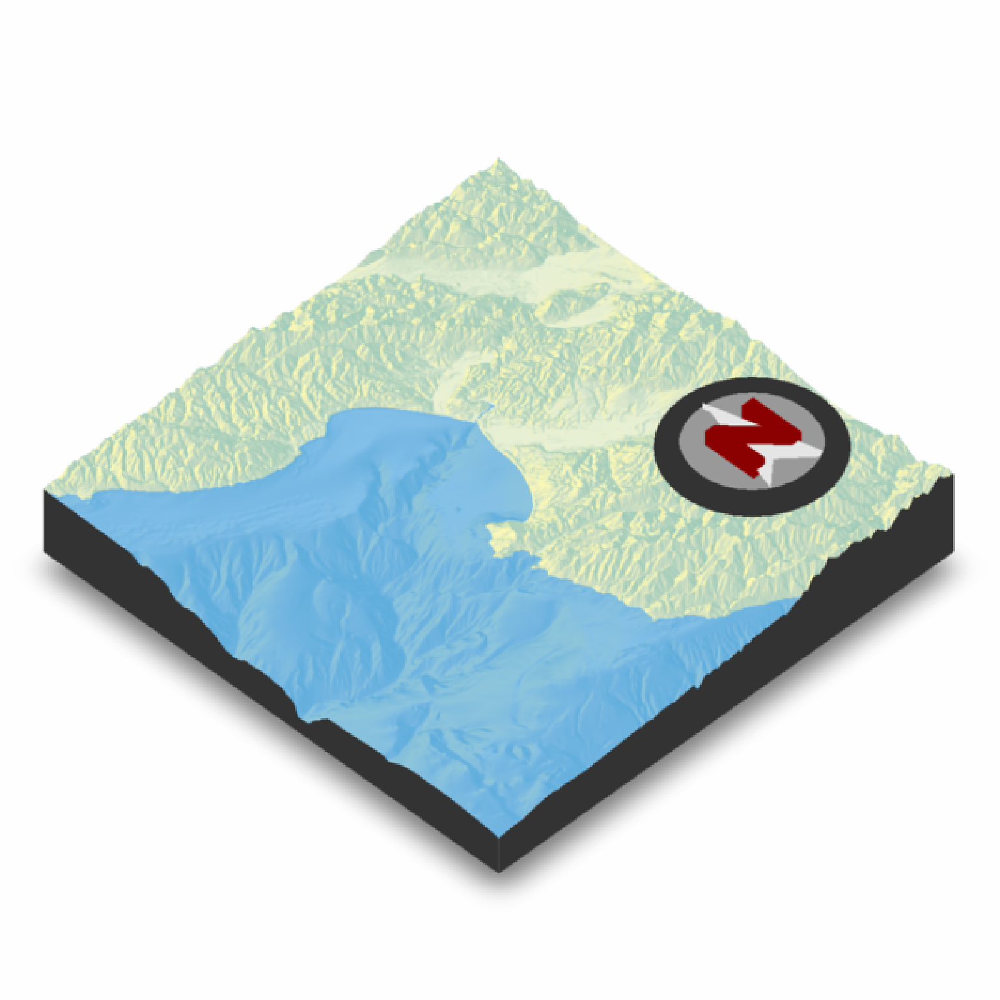
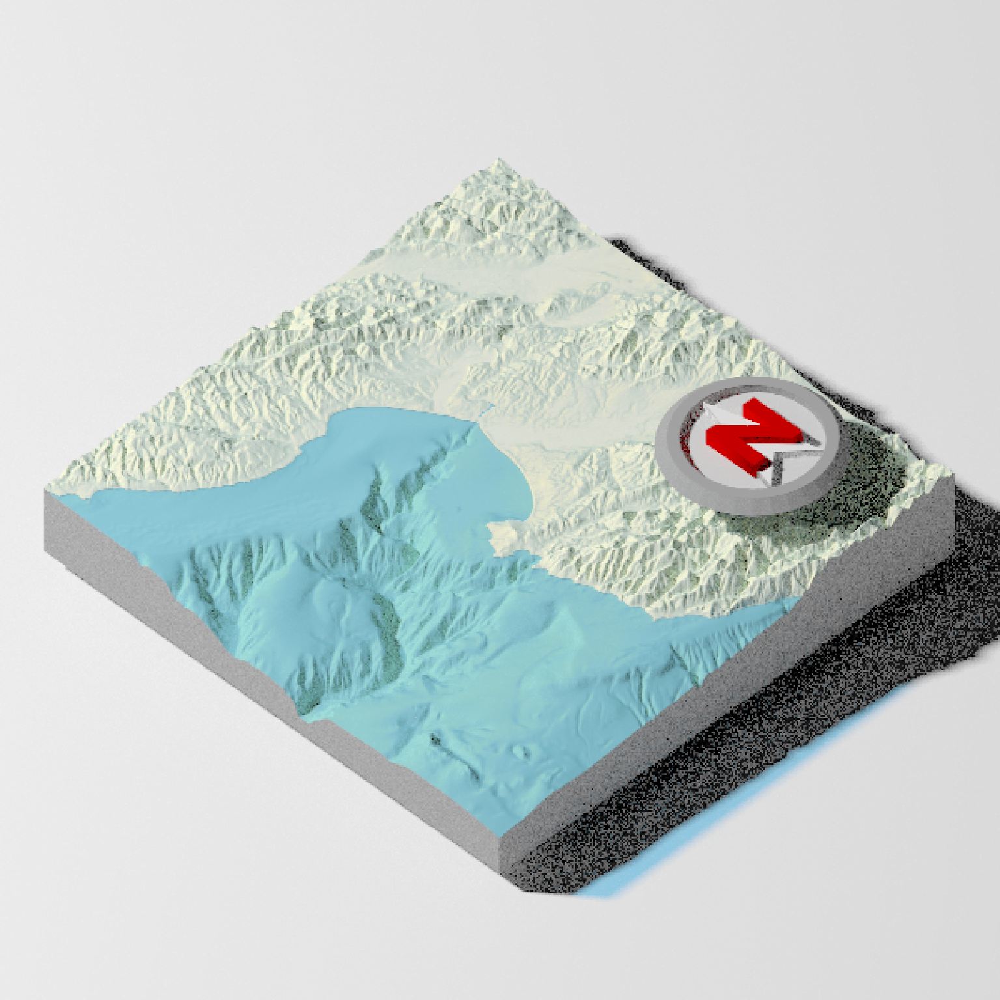
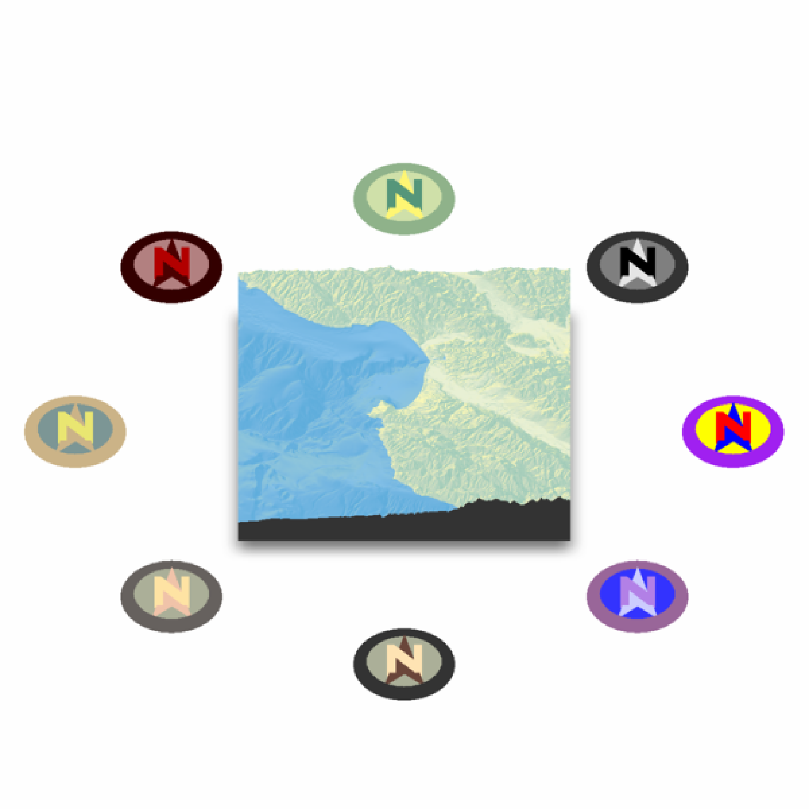

Places a compass on the map to specify the North direction.
render_compass(
angle = 0,
position = "SE",
altitude = NULL,
zscale = 1,
x = NULL,
y = NULL,
z = NULL,
compass_radius = NULL,
scale_distance = 1,
color_n = "darkred",
color_arrow = "grey90",
color_background = "grey60",
color_bevel = "grey20",
position_circular = FALSE,
clear_compass = FALSE
)Default `0`. The direction the arrow should be facing.
Default `SE`. A string representing a cardinal direction. Ignored if `x`, `y`, and `z` are manually specified.
Default `NULL`. Altitude of the compass, defaults to maximum height in the map.
Default `1`. The ratio between the x and y spacing (which are assumed to be equal) and the z axis. Only used in combination with `altitude`.
Default `NULL`. X position. If not entered, automatically calculated using `position` argument.
Default `NULL`. Y position. If not entered, automatically calculated using `position` argument.
Default `NULL`. Z position. If not entered, automatically calculated using `position` argument.
Default `NULL`. The radius of the compass. If not entered, automatically calculated. Increase or decrease the size of the compass.
Default `1`. Multiplier that moves the compass away from the center of the map.
Default `darkred`. Color of the letter N.
Default `grey90`. Color of the arrow.
Default `grey20`. Color of the area right under the arrow.
Default `grey20`. Color of the bevel.
Default `FALSE`. If `TRUE`, will place compass at a constant radius away from the map, as opposed to directly next to it. Overridden if user manually specifies position.
Default `FALSE`. Clears the compass symbol(s) on the map.
Adds compass to map. No return value.
#Add a North arrow to the map, by default in the bottom right (SE)
# \dontrun{
montereybay %>%
sphere_shade() %>%
plot_3d(montereybay,theta=-45, water=TRUE)
#> `montereybay` dataset used with no zscale--setting `zscale=50`. For a realistic depiction, raise `zscale` to 200.
render_compass()
render_snapshot()

#Remove the existing symbol with `clear_compass = TRUE`
render_compass(clear_compass = TRUE)
#Point the N towards the light, at 315 degrees:
render_compass(angle = 315)
render_snapshot()
render_compass(clear_compass = TRUE)
#We can change the position by specifying a direction (here are three):
render_camera(theta=45,phi=45)
render_compass(position = "NW")
render_compass(position = "E")
render_compass(position = "S")
render_snapshot()

render_compass(clear_compass = TRUE)
#We can also change the distance away from the edge by setting the `scale_distance` argument.
render_compass(position = "NW", scale_distance = 1.4)
render_compass(position = "E", scale_distance = 1.4)
render_compass(position = "S", scale_distance = 1.4)
#Zoom in slightly:
render_camera(theta=45,phi=45,zoom=0.7)
render_snapshot()

render_compass(clear_compass = TRUE)
#We can also specify the radius directly with `compass_radius`:
render_camera(theta=0,phi=45,zoom=1)
render_compass(position = "N", scale_distance = 1.5, compass_radius=200)
render_compass(position = "E", scale_distance = 1.4, compass_radius=50)
render_compass(position = "S", scale_distance = 1.3, compass_radius=25)
render_compass(position = "W", scale_distance = 1.2, compass_radius=10)
render_snapshot()

render_compass(clear_compass = TRUE)
#We can also adjust the position manually, be specifying all x, y and z arguments.
render_camera(theta=-45,phi=45,zoom=0.9)
render_compass(x = 150, y = 50, z = 150)
render_snapshot()

# Compass support is also included in render_highquality()
render_highquality(clamp_value=10)

render_compass(clear_compass = TRUE)
#We can change the colors in the compass, and also set it a constant distance away with
#`position_circular = TRUE`:
render_camera(theta=0,phi=45,zoom=0.75)
render_compass(position = "N", color_n = "#55967a", color_arrow = "#fff673",
color_background = "#cfe0a9", color_bevel = "#8fb28a", position_circular = TRUE)
render_compass(position = "NE", color_n = "black", color_arrow = "grey90",
color_background = "grey50", color_bevel = "grey20", position_circular = TRUE)
render_compass(position = "E", color_n = "red", color_arrow = "blue",
color_background = "yellow", color_bevel = "purple", position_circular = TRUE)
render_compass(position = "SE", color_n = c(0.7,0.5,0.9), color_arrow = c(0.8,0.8,1),
color_background = c(0.2,0.2,1), color_bevel = c(0.6,0.4,0.6),
position_circular = TRUE)
render_compass(position = "S", color_n = "#ffe3b3", color_arrow = "#6a463a",
color_background = "#abaf98", color_bevel = "grey20", position_circular = TRUE)
render_compass(position = "SW", color_n = "#ffe3a3", color_arrow = "#f1c3a9",
color_background = "#abaf98", color_bevel = "#66615e", position_circular = TRUE)
render_compass(position = "W", color_n = "#e9e671", color_arrow = "#cbb387",
color_background = "#7c9695", color_bevel = "#cbb387", position_circular = TRUE)
render_compass(position = "NW", color_n = c(0.7,0,0), color_arrow = c(0.3,0,0),
color_background = c(0.7,0.5,0.5), color_bevel = c(0.2,0,0), position_circular = TRUE)
render_snapshot(clear=TRUE)

# }